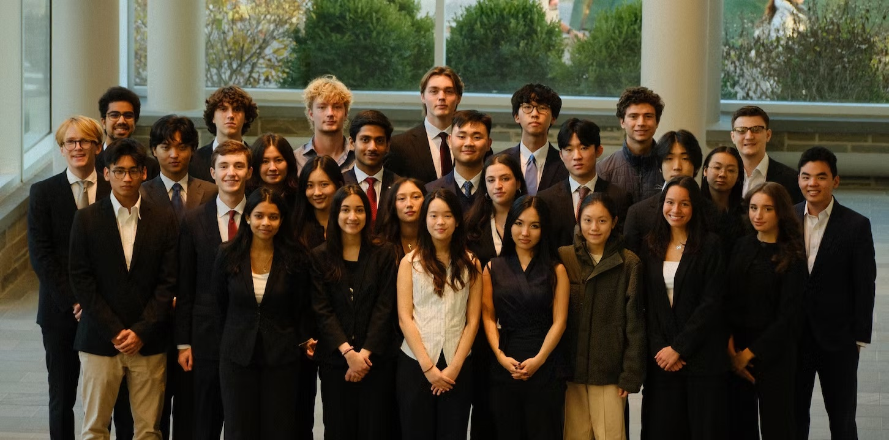

About EMIC
A student research community studying the policy, capital, and institutions shaping emerging markets — in partnership with Cornell's Cañizares Center for Emerging Markets.
EMIC began as "The Little Brother of EMI," the former name of the Cañizares Center for Emerging Markets. A shared commitment to research has since grown that relationship into something larger — EMIC is now the Center's primary research arm, while building independent projects of our own and growing rapidly along the way.

A 10-week curriculum, led by upperclassmen, builds new members' foundation in market research and analysis, before closing with a capstone project — new members finish the program by either self-publishing a paper for our yearly research report, or pitching an investment opportunity.